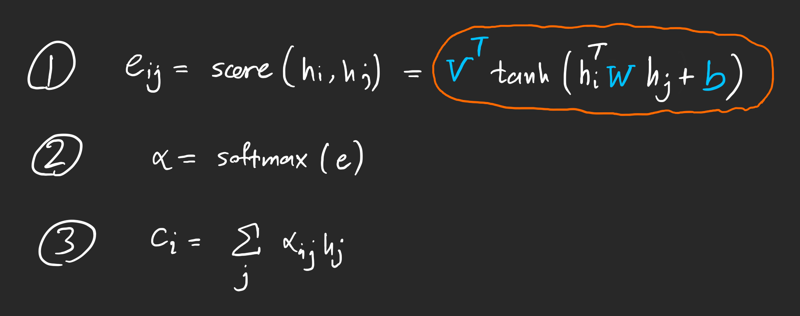
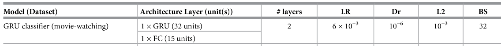

GRU + Attention
Contents
GRU + Attention#
Overview#
This notebook extends the GRU Classifier model (movie watching) described in the paper by adding an Attention Layer
Attention used here was first presented by Dzmitry Bahdanau, et al. in their paper Neural Machine Translation by Jointly Learning to Align and Translate.
Data#
Data provided is already preprocessed but needs to be converted in model usabale format
import torch
import pickle
import numpy as np
import torch.nn as nn
with open('HCP_movie_watching.pkl','rb') as f:
TS = pickle.load(f)
print(TS.keys())
dict_keys(['testretest', 'twomen', 'bridgeville', 'pockets', 'overcome', 'inception', 'socialnet', 'oceans', 'flower', 'hotel', 'garden', 'dreary', 'homealone', 'brokovich', 'starwars'])
Dataset organization#
TS is a dictionary with movie names as keys
Value against each key is a numpy array of dimensions [#participants, #time points, #ROIs]
Note that the testretest movie appears on all 4 runs for a participant, therefore the value has dimensions [#runs, #participants, #time points, #ROIs]
rel = {}
l = 0
for movie_name, ts in TS.items():
rel[movie_name] = l
l += 1
print(movie_name, ts.shape)
testretest (4, 176, 84, 300)
twomen (176, 245, 300)
bridgeville (176, 222, 300)
pockets (176, 189, 300)
overcome (176, 65, 300)
inception (176, 227, 300)
socialnet (176, 260, 300)
oceans (176, 250, 300)
flower (176, 181, 300)
hotel (176, 186, 300)
garden (176, 205, 300)
dreary (176, 143, 300)
homealone (176, 233, 300)
brokovich (176, 231, 300)
starwars (176, 256, 300)
Padding sequences#
To deal with varying time points. For data with time points < seq_length(self defined) , I have paded them with 0s. For data with time points > seq_length(self defined), I have split the data into 2 section first, into [ : seq_length], second into [data_time_point-seq_length : ]. I have used the seq_length = 198 (average time_point mentioned in the paper).
Final features array is a 2D array, with shape = (seq_length,300).
The following block shows above mentioned discussion
train_feature = []
test_feature = []
train_target = []
test_target = []
seq_length = 198
for movie_name, ts in TS.items():
pep = 0
if movie_name != "testretest":
for i in ts:
pep += 1
if (pep <= 100):
if i.shape[0]>seq_length:
k = i[:seq_length][:]
train_feature.append(k)
train_target.append(rel[movie_name])
k = i[i.shape[0]-seq_length:][:]
train_feature.append(k)
train_target.append(rel[movie_name])
elif i.shape[0]<seq_length:
k = [[0]*300]*seq_length
k[seq_length-i.shape[0]:] = i
train_feature.append(k)
train_target.append(rel[movie_name])
else:
train_feature.append(i)
train_target.append(rel[movie_name])
else:
if i.shape[0]>seq_length:
k = i[:seq_length][:]
test_feature.append(k)
test_target.append(rel[movie_name])
k = i[i.shape[0]-seq_length:][:]
test_feature.append(k)
test_target.append(rel[movie_name])
elif i.shape[0]<seq_length:
k = [[0]*300]*seq_length
k[seq_length-i.shape[0]:] = i
test_feature.append(k)
test_target.append(rel[movie_name])
else:
test_feature.append(i)
test_target.append(rel[movie_name])
print(pep)
else:
for jj in ts:
pep = 0
for i in jj:
pep += 1
if (pep <= 101):
if i.shape[0]>seq_length:
k = i[:seq_length][:]
train_feature.append(k)
train_target.append(rel[movie_name])
k = i[i.shape[0]-seq_length:][:]
train_feature.append(k)
train_target.append(rel[movie_name])
elif i.shape[0]<seq_length:
k = [[0]*300]*seq_length
k[seq_length-i.shape[0]:] = i
train_feature.append(k)
train_target.append(rel[movie_name])
else:
train_feature.append(i)
train_target.append(rel[movie_name])
else:
if i.shape[0]>seq_length:
k = i[:seq_length][:]
test_feature.append(k)
test_target.append(rel[movie_name])
k = i[i.shape[0]-seq_length:][:]
test_feature.append(k)
test_target.append(rel[movie_name])
elif i.shape[0]<seq_length:
k = [[0]*300]*seq_length
k[seq_length-i.shape[0]:] = i
test_feature.append(k)
test_target.append(rel[movie_name])
else:
test_feature.append(i)
test_target.append(rel[movie_name])
print(pep)
176
176
176
176
176
176
176
176
176
176
176
176
176
176
176
176
176
176
Training, Validation, Test#
With the data in required shape, The following shows the split into training, validation, and test sets.
len(train_feature), len(test_feature)
(2704, 2048)
from torch.utils.data import TensorDataset, DataLoader
train_data = TensorDataset(torch.from_numpy(np.array(train_feature)).float(),torch.from_numpy(np.array(train_target)).float())
test_data = TensorDataset(torch.from_numpy(np.array(test_feature)).float(),torch.from_numpy(np.array(test_target)).float())
len(train_data),len(test_data)
(2704, 2048)
from torch.utils.data.sampler import SubsetRandomSampler
batch_size = 32
valid_data = 0.25
t_train = len(train_data)
data_no = list(range(t_train))
np.random.shuffle(data_no)
split_no = int(np.ceil(valid_data*t_train))
train,valid = data_no[split_no:],data_no[:split_no]
train_sampler = SubsetRandomSampler(train)
valid_sampler = SubsetRandomSampler(valid)
train_loader = DataLoader(train_data,batch_size=batch_size,sampler=train_sampler,drop_last=True)
valid_loader = DataLoader(train_data,sampler=valid_sampler,batch_size=batch_size,drop_last=True)
test_loader = DataLoader(test_data, batch_size=batch_size,shuffle = True)
len(valid)
676
len(train_loader),len(valid_loader),len(test_loader)
(63, 21, 64)
iter(train_loader).next()[0].shape
torch.Size([32, 198, 300])
is_cuda = torch.cuda.is_available()
if is_cuda:
device = torch.device("cuda")
else:
device = torch.device("cpu")
device
device(type='cuda')
Models#
Implementing the Attention(Bahdanau) Model#
Following figures shows the steps involved in: Blue are the parameters
class Attention(nn.Module):
def __init__(self, hidden_dim):
super().__init__()
self.hidden_dim = hidden_dim
self.W = nn.Linear(2*hidden_dim, hidden_dim, bias=False)
self.V = nn.Parameter(torch.rand(hidden_dim))
self.softmax = nn.Softmax(dim = 1)
def forward(self, x_prev, hj):
'''
PARAMS:
hj: prev hidden_state: [b, n_layers, hidden_dim]
x_prev: prev gru layer output: [b, seq_len, hidden_dim]
RETURN:
att_weights: [b, src_seq_len]
'''
hj = hj.permute(1, 0, 2)
batch_size = x_prev.size(0)
seq_len = x_prev.size(1)
hj = hj[:, -1, :].unsqueeze(1).repeat(1, seq_len, 1) #[b, seq_len, hidden_dim]
tanh_W_s_h = torch.tanh(self.W(torch.cat((x_prev, hj), dim=2))) #[b, sseq_len, hidden_dim]
tanh_W_s_h = tanh_W_s_h.permute(0, 2, 1) #[b, hidden_dim, seq_len]
V = self.V.repeat(batch_size, 1).unsqueeze(1) #[b, 1, hidden_dim]
e = torch.bmm(V, tanh_W_s_h).squeeze(1) #[b, seq_len]
att_weights = self.softmax(e) #[b, seq_len]
return att_weights
GRU Classifier Model as described in the paper with added normalization layers#

class GRU_RNN(nn.Module):
def __init__(self, input_dim, output_dim,hidden_dim,n_layers,att=True,drop_prob=0.000006):
super(GRU_RNN, self).__init__()
self.output_dim = output_dim
self.n_layers = n_layers
self.hidden_dim = hidden_dim
self.att = att
self.gru = nn.GRU(input_dim,hidden_dim,num_layers=n_layers,dropout=drop_prob,batch_first=True)
self.linear = nn.Linear(hidden_dim,output_dim)
if att:
self.attention = Attention(hidden_dim)
self.linear = nn.Linear(2*hidden_dim,output_dim)
self.dropout = nn.Dropout(0.3)
self.func = nn.Softmax(dim = -1)
def forward(self, input_x, hj, prev_x):
xi,hi = self.gru(input_x,hj)
if self.att:
att_weights = self.attention(prev_x,hj).unsqueeze(1)
weighted_sum = torch.bmm(att_weights,xi)
x = torch.cat((weighted_sum.squeeze(1),prev_x[:,-1,:]), dim=1)
else:
x = xi[:, -1, :]
x = self.dropout(x)
x = self.linear(x)
sig_out = self.func(x)
return sig_out,hi,xi
def init_hidden(self, batch_size):
weight = next(self.parameters()).data
hidden = weight.new(self.n_layers, batch_size, self.hidden_dim).zero_().to(device)
return hidden
Training#
def train(epochs,train_loader,net,valid_loader,optimzer,criterion,att=True):
val_acc = []
tr_acc = []
clip = 3 # gradient clipping
net.to(device)
net.train()
valid_loss_min = np.Inf
valid_losses = []
train_losses = []
prev_x = torch.zeros(batch_size,seq_length,hidden_dim).to(device)
nn.init.kaiming_uniform_(prev_x)
for e in range(epochs):
num_correct = 0
h = net.init_hidden(batch_size)
prev_x = torch.zeros(batch_size,seq_length,hidden_dim).to(device)
nn.init.kaiming_uniform_(prev_x)
train_loss = []
valid_loss = []
train_acc = 0.0
valid_acc = 0.0
counter = 0
for inputs, labels in train_loader:
inputs, labels = inputs.to(device), labels.type(torch.LongTensor).to(device)
h = h.data
net.zero_grad()
output, h, prev_x = net(inputs, h.detach(), prev_x.detach())
pred = torch.round(output.squeeze())
top_value, top_index = torch.max(pred,1)
correct_tensor = top_index.eq(labels.float().view_as(top_index))
correct = np.squeeze(correct_tensor.to('cpu').numpy())
num_correct += np.sum(correct)
loss = criterion(output, labels)
loss.backward()
nn.utils.clip_grad_norm_(net.parameters(), clip)
optimizer.step()
train_loss.append(loss.item())
tr_acc.append(num_correct/((len(train_loader)-1)*batch_size))
acc = 0.0
val_h = net.init_hidden(batch_size)
val_prev_x = torch.zeros(batch_size,seq_length,hidden_dim).to(device)
nn.init.kaiming_uniform_(val_prev_x)
val_losses = []
net.eval()
num_correct = 0
v_c = 0
for inputs, labels in valid_loader:
val_h = val_h.data
inputs, labels = inputs.to(device), labels.type(torch.LongTensor).to(device)
output, val_h, val_prev_x = net(inputs, val_h,val_prev_x)
pred = torch.round(output.squeeze())
top_value, top_index = torch.max(pred,1)
correct_tensor = top_index.eq(labels.float().view_as(top_index))
correct = np.squeeze(correct_tensor.to('cpu').numpy())
num_correct += np.sum(correct)
val_loss = criterion(output.squeeze(),labels)
val_losses.append(val_loss.item())
if val_loss.item() <= valid_loss_min:
print('Validation loss decreased ({:.6f} --> {:.6f}). Saving model ...'.format(valid_loss_min, val_loss.item()))
best_epoch = e
if att:
torch.save(net.state_dict(), 'RNN_GRU_Att.pt')
else:
torch.save(net.state_dict(), 'RNN_GRU.pt')
valid_loss_min = val_loss.item()
net.train()
valid_losses.append(np.mean(val_losses))
train_losses.append(np.mean(train_loss))
val_acc.append(num_correct/(len(valid_loader)*batch_size))
print('Epoch: {}/{} \tTraining Loss: {:.6f} \tValidation Loss: {:.6f}'.format(e+1,epochs,np.mean(train_loss),np.mean(val_losses)))
return train_losses,valid_losses,tr_acc,val_acc,best_epoch
epochs = 55
input_dim = 300
hidden_dim = 32
output_dim = 15
n_layers = 2
lr = 0.006
Training with Attention Layer#
model = GRU_RNN(input_dim, output_dim, hidden_dim, n_layers)
optimizer = torch.optim.Adam(model.parameters(), lr=lr)
criterion = nn.CrossEntropyLoss()
print(model)
GRU_RNN(
(gru): GRU(300, 32, num_layers=2, batch_first=True, dropout=6e-06)
(linear): Linear(in_features=64, out_features=15, bias=True)
(attention): Attention(
(W): Linear(in_features=64, out_features=32, bias=False)
(softmax): Softmax(dim=1)
)
(dropout): Dropout(p=0.3, inplace=False)
(func): Softmax(dim=-1)
)
train_losses,valid_losses,tr_acc,val_acc,best_epoch = train(epochs,train_loader,model,valid_loader,optimizer,criterion)
Validation loss decreased (inf --> 2.457238). Saving model ...
Validation loss decreased (2.457238 --> 2.373328). Saving model ...
Epoch: 1/55 Training Loss: 2.599293 Validation Loss: 2.524363
Validation loss decreased (2.373328 --> 2.341884). Saving model ...
Epoch: 2/55 Training Loss: 2.468103 Validation Loss: 2.438837
Validation loss decreased (2.341884 --> 2.293653). Saving model ...
Validation loss decreased (2.293653 --> 2.223446). Saving model ...
Epoch: 3/55 Training Loss: 2.405302 Validation Loss: 2.387956
Validation loss decreased (2.223446 --> 2.222155). Saving model ...
Epoch: 4/55 Training Loss: 2.324601 Validation Loss: 2.307748
Validation loss decreased (2.222155 --> 2.197115). Saving model ...
Validation loss decreased (2.197115 --> 2.122011). Saving model ...
Epoch: 5/55 Training Loss: 2.259597 Validation Loss: 2.264010
Validation loss decreased (2.122011 --> 2.107618). Saving model ...
Validation loss decreased (2.107618 --> 2.092265). Saving model ...
Epoch: 6/55 Training Loss: 2.190341 Validation Loss: 2.177773
Validation loss decreased (2.092265 --> 2.063604). Saving model ...
Epoch: 7/55 Training Loss: 2.149294 Validation Loss: 2.178194
Validation loss decreased (2.063604 --> 2.015322). Saving model ...
Epoch: 8/55 Training Loss: 2.108910 Validation Loss: 2.129760
Validation loss decreased (2.015322 --> 1.989239). Saving model ...
Validation loss decreased (1.989239 --> 1.976246). Saving model ...
Validation loss decreased (1.976246 --> 1.969607). Saving model ...
Epoch: 9/55 Training Loss: 2.053796 Validation Loss: 2.078911
Validation loss decreased (1.969607 --> 1.947604). Saving model ...
Epoch: 10/55 Training Loss: 2.035371 Validation Loss: 2.060731
Epoch: 11/55 Training Loss: 2.012808 Validation Loss: 2.069265
Epoch: 12/55 Training Loss: 2.016757 Validation Loss: 2.078523
Validation loss decreased (1.947604 --> 1.938853). Saving model ...
Epoch: 13/55 Training Loss: 2.006350 Validation Loss: 2.048320
Validation loss decreased (1.938853 --> 1.934308). Saving model ...
Validation loss decreased (1.934308 --> 1.933029). Saving model ...
Validation loss decreased (1.933029 --> 1.928182). Saving model ...
Epoch: 14/55 Training Loss: 1.976431 Validation Loss: 1.993823
Epoch: 15/55 Training Loss: 1.955488 Validation Loss: 2.017503
Validation loss decreased (1.928182 --> 1.922393). Saving model ...
Validation loss decreased (1.922393 --> 1.902889). Saving model ...
Epoch: 16/55 Training Loss: 1.946516 Validation Loss: 1.995346
Epoch: 17/55 Training Loss: 1.953231 Validation Loss: 2.005012
Validation loss decreased (1.902889 --> 1.902719). Saving model ...
Validation loss decreased (1.902719 --> 1.877347). Saving model ...
Epoch: 18/55 Training Loss: 1.947722 Validation Loss: 1.984340
Epoch: 19/55 Training Loss: 1.932972 Validation Loss: 1.972273
Validation loss decreased (1.877347 --> 1.864731). Saving model ...
Validation loss decreased (1.864731 --> 1.860011). Saving model ...
Validation loss decreased (1.860011 --> 1.843998). Saving model ...
Epoch: 20/55 Training Loss: 1.927015 Validation Loss: 1.949134
Epoch: 21/55 Training Loss: 1.919861 Validation Loss: 1.973495
Epoch: 22/55 Training Loss: 1.918040 Validation Loss: 1.949350
Epoch: 23/55 Training Loss: 1.896321 Validation Loss: 1.932071
Epoch: 24/55 Training Loss: 1.900025 Validation Loss: 1.955758
Epoch: 25/55 Training Loss: 1.912035 Validation Loss: 1.956371
Epoch: 26/55 Training Loss: 1.915309 Validation Loss: 1.956767
Epoch: 27/55 Training Loss: 1.911251 Validation Loss: 1.948015
Epoch: 28/55 Training Loss: 1.896718 Validation Loss: 1.935864
Epoch: 29/55 Training Loss: 1.886154 Validation Loss: 1.927497
Epoch: 30/55 Training Loss: 1.881236 Validation Loss: 1.925111
Epoch: 31/55 Training Loss: 1.890488 Validation Loss: 1.937386
Epoch: 32/55 Training Loss: 1.902981 Validation Loss: 1.969439
Epoch: 33/55 Training Loss: 1.916307 Validation Loss: 1.942919
Validation loss decreased (1.843998 --> 1.836706). Saving model ...
Epoch: 34/55 Training Loss: 1.902257 Validation Loss: 1.938263
Epoch: 35/55 Training Loss: 1.890190 Validation Loss: 1.938289
Epoch: 36/55 Training Loss: 1.892686 Validation Loss: 1.932224
Validation loss decreased (1.836706 --> 1.827536). Saving model ...
Epoch: 37/55 Training Loss: 1.909522 Validation Loss: 1.943655
Epoch: 38/55 Training Loss: 1.917515 Validation Loss: 1.932843
Epoch: 39/55 Training Loss: 1.900651 Validation Loss: 1.929024
Epoch: 40/55 Training Loss: 1.889435 Validation Loss: 1.926753
Validation loss decreased (1.827536 --> 1.826634). Saving model ...
Epoch: 41/55 Training Loss: 1.886197 Validation Loss: 1.927034
Validation loss decreased (1.826634 --> 1.823769). Saving model ...
Epoch: 42/55 Training Loss: 1.880218 Validation Loss: 1.914281
Epoch: 43/55 Training Loss: 1.877535 Validation Loss: 1.916815
Validation loss decreased (1.823769 --> 1.820724). Saving model ...
Epoch: 44/55 Training Loss: 1.879146 Validation Loss: 1.913199
Epoch: 45/55 Training Loss: 1.865679 Validation Loss: 1.904695
Epoch: 46/55 Training Loss: 1.865179 Validation Loss: 1.906178
Epoch: 47/55 Training Loss: 1.876360 Validation Loss: 1.927046
Epoch: 48/55 Training Loss: 1.882865 Validation Loss: 1.932765
Epoch: 49/55 Training Loss: 1.887669 Validation Loss: 1.929597
Epoch: 50/55 Training Loss: 1.890348 Validation Loss: 1.924862
Epoch: 51/55 Training Loss: 1.893407 Validation Loss: 1.948250
Epoch: 52/55 Training Loss: 1.893858 Validation Loss: 1.925953
Epoch: 53/55 Training Loss: 1.877799 Validation Loss: 1.915025
Epoch: 54/55 Training Loss: 1.872840 Validation Loss: 1.915223
Epoch: 55/55 Training Loss: 1.875477 Validation Loss: 1.924663
import matplotlib.pyplot as plt
x = [i for i in range(1,epochs+1)]
xi = [i for i in range(0,epochs+5,5)]
xi[0] = 1
f, axis = plt.subplots(2,1)
f.set_figwidth(20)
f.set_figheight(12)
plt.subplots_adjust(top=0.8, wspace=0.2,hspace=0.3)
axis[0].plot(x,train_losses)
axis[0].plot(x,valid_losses)
axis[0].axvline(best_epoch, color='black')
axis[0].set_xticks(xi)
axis[0].set_xlabel("Epochs",fontweight="bold",color = 'Black', fontsize='15', horizontalalignment='center')
axis[0].set_ylabel("Loss",fontweight="bold",color = 'Black', fontsize='15', horizontalalignment='center')
axis[0].set_title("Losses (with Attention)",fontweight='bold',color = 'Black', fontsize='15', horizontalalignment='center')
axis[0].legend(["Training Loss","Valid Loss",f"Best Epoch= {best_epoch}"])
axis[1].plot(x,tr_acc)
axis[1].plot(x,val_acc)
axis[1].set_xticks(xi)
axis[1].set_xlabel("Epochs", fontweight='bold',color = 'Black', fontsize='15', horizontalalignment='center')
axis[1].set_ylabel("Accuracy",fontweight='bold',color = 'Black', fontsize='15', horizontalalignment='center')
axis[1].set_title("Accuracies (with Attention)",fontweight='bold',color = 'Black', fontsize='15', horizontalalignment='center')
axis[1].legend(["Training Accuracy","Valid Accuracy"]);
Training without Attention Layer#
model = GRU_RNN(input_dim, output_dim, hidden_dim, n_layers,att=False)
optimizer = torch.optim.Adam(model.parameters(), lr=lr)
criterion = nn.CrossEntropyLoss()
print(model)
GRU_RNN(
(gru): GRU(300, 32, num_layers=2, batch_first=True, dropout=6e-06)
(linear): Linear(in_features=32, out_features=15, bias=True)
(dropout): Dropout(p=0.3, inplace=False)
(func): Softmax(dim=-1)
)
train_losses_1,valid_losses_1,tr_acc_1,val_acc_1,best_epoch_1= train(epochs,train_loader,model,valid_loader,optimizer,criterion,att=False)
Validation loss decreased (inf --> 2.393660). Saving model ...
Validation loss decreased (2.393660 --> 2.349475). Saving model ...
Validation loss decreased (2.349475 --> 2.343988). Saving model ...
Epoch: 1/55 Training Loss: 2.547561 Validation Loss: 2.420918
Validation loss decreased (2.343988 --> 2.285839). Saving model ...
Validation loss decreased (2.285839 --> 2.205021). Saving model ...
Validation loss decreased (2.205021 --> 2.162819). Saving model ...
Validation loss decreased (2.162819 --> 2.143725). Saving model ...
Epoch: 2/55 Training Loss: 2.314393 Validation Loss: 2.283260
Validation loss decreased (2.143725 --> 2.143002). Saving model ...
Validation loss decreased (2.143002 --> 2.114893). Saving model ...
Validation loss decreased (2.114893 --> 2.087795). Saving model ...
Validation loss decreased (2.087795 --> 2.085649). Saving model ...
Epoch: 3/55 Training Loss: 2.205447 Validation Loss: 2.231950
Validation loss decreased (2.085649 --> 2.084089). Saving model ...
Validation loss decreased (2.084089 --> 2.011329). Saving model ...
Epoch: 4/55 Training Loss: 2.151215 Validation Loss: 2.195237
Epoch: 5/55 Training Loss: 2.129234 Validation Loss: 2.165178
Validation loss decreased (2.011329 --> 2.004776). Saving model ...
Epoch: 6/55 Training Loss: 2.102778 Validation Loss: 2.158245
Validation loss decreased (2.004776 --> 1.971976). Saving model ...
Epoch: 7/55 Training Loss: 2.089170 Validation Loss: 2.148022
Validation loss decreased (1.971976 --> 1.955443). Saving model ...
Epoch: 8/55 Training Loss: 2.071291 Validation Loss: 2.149593
Epoch: 9/55 Training Loss: 2.072371 Validation Loss: 2.162316
Epoch: 10/55 Training Loss: 2.073714 Validation Loss: 2.142117
Epoch: 11/55 Training Loss: 2.057137 Validation Loss: 2.200862
Epoch: 12/55 Training Loss: 2.079176 Validation Loss: 2.141863
Epoch: 13/55 Training Loss: 2.050327 Validation Loss: 2.135885
Epoch: 14/55 Training Loss: 2.037013 Validation Loss: 2.133004
Epoch: 15/55 Training Loss: 2.035291 Validation Loss: 2.130901
Epoch: 16/55 Training Loss: 2.015747 Validation Loss: 2.113473
Epoch: 17/55 Training Loss: 2.021580 Validation Loss: 2.117173
Epoch: 18/55 Training Loss: 2.017030 Validation Loss: 2.105281
Epoch: 19/55 Training Loss: 2.005915 Validation Loss: 2.099708
Epoch: 20/55 Training Loss: 1.993390 Validation Loss: 2.094073
Validation loss decreased (1.955443 --> 1.940374). Saving model ...
Epoch: 21/55 Training Loss: 2.004613 Validation Loss: 2.086799
Epoch: 22/55 Training Loss: 1.998800 Validation Loss: 2.105437
Epoch: 23/55 Training Loss: 1.988821 Validation Loss: 2.089693
Validation loss decreased (1.940374 --> 1.915072). Saving model ...
Epoch: 24/55 Training Loss: 1.990459 Validation Loss: 2.071839
Epoch: 25/55 Training Loss: 1.984909 Validation Loss: 2.097346
Epoch: 26/55 Training Loss: 2.005873 Validation Loss: 2.079458
Epoch: 27/55 Training Loss: 1.994819 Validation Loss: 2.085391
Epoch: 28/55 Training Loss: 1.998658 Validation Loss: 2.117735
Epoch: 29/55 Training Loss: 2.009924 Validation Loss: 2.092815
Epoch: 30/55 Training Loss: 2.005395 Validation Loss: 2.080503
Epoch: 31/55 Training Loss: 2.005457 Validation Loss: 2.108812
Epoch: 32/55 Training Loss: 2.008765 Validation Loss: 2.111199
Validation loss decreased (1.915072 --> 1.879524). Saving model ...
Epoch: 33/55 Training Loss: 2.010760 Validation Loss: 2.088136
Epoch: 34/55 Training Loss: 2.000449 Validation Loss: 2.095184
Epoch: 35/55 Training Loss: 1.992878 Validation Loss: 2.071387
Epoch: 36/55 Training Loss: 1.982024 Validation Loss: 2.069904
Epoch: 37/55 Training Loss: 1.975181 Validation Loss: 2.077060
Epoch: 38/55 Training Loss: 1.992547 Validation Loss: 2.098154
Epoch: 39/55 Training Loss: 2.005320 Validation Loss: 2.084858
Epoch: 40/55 Training Loss: 2.002863 Validation Loss: 2.096193
Epoch: 41/55 Training Loss: 2.006129 Validation Loss: 2.095626
Epoch: 42/55 Training Loss: 1.999327 Validation Loss: 2.072743
Epoch: 43/55 Training Loss: 2.000198 Validation Loss: 2.074540
Epoch: 44/55 Training Loss: 1.984998 Validation Loss: 2.068282
Epoch: 45/55 Training Loss: 1.998816 Validation Loss: 2.067018
Epoch: 46/55 Training Loss: 1.981946 Validation Loss: 2.085722
Epoch: 47/55 Training Loss: 1.986812 Validation Loss: 2.084004
Epoch: 48/55 Training Loss: 1.974812 Validation Loss: 2.076586
Epoch: 49/55 Training Loss: 1.976456 Validation Loss: 2.065510
Epoch: 50/55 Training Loss: 1.965071 Validation Loss: 2.077965
Epoch: 51/55 Training Loss: 1.968333 Validation Loss: 2.067781
Epoch: 52/55 Training Loss: 1.980085 Validation Loss: 2.091760
Epoch: 53/55 Training Loss: 1.983839 Validation Loss: 2.074736
Epoch: 54/55 Training Loss: 1.988467 Validation Loss: 2.090234
Epoch: 55/55 Training Loss: 1.992952 Validation Loss: 2.111479
f, axis = plt.subplots(2,1)
f.set_figwidth(20)
f.set_figheight(12)
plt.subplots_adjust(top=0.8, wspace=0.2,hspace=0.3)
axis[0].plot(x,train_losses_1)
axis[0].plot(x,valid_losses_1)
axis[0].axvline(best_epoch, color='black')
axis[0].set_xticks(xi)
axis[0].set_xlabel("Epochs",fontweight="bold",color = 'Black', fontsize='15', horizontalalignment='center')
axis[0].set_ylabel("Loss",fontweight="bold",color = 'Black', fontsize='15', horizontalalignment='center')
axis[0].set_title("Losses (without Attention)",fontweight='bold',color = 'Black', fontsize='15', horizontalalignment='center')
axis[0].legend(["Training Loss","Valid Loss",f"Best Epoch= {best_epoch_1}"])
axis[1].plot(x,tr_acc_1)
axis[1].plot(x,val_acc_1)
axis[1].set_xticks(xi)
axis[1].set_xlabel("Epochs", fontweight='bold',color = 'Black', fontsize='15', horizontalalignment='center')
axis[1].set_ylabel("Accuracies",fontweight='bold',color = 'Black', fontsize='15', horizontalalignment='center')
axis[1].set_title("Accuracy (without Attention)",fontweight='bold',color = 'Black', fontsize='15', horizontalalignment='center')
axis[1].legend(["Training Accuracy","Valid Accuracy"]);
Testing#
def test(test_loader,net):
net.to(device)
net.eval()
num_correct = 0
valid_acc = 0
h = net.init_hidden(batch_size)
prev_x = torch.zeros(batch_size,seq_length,hidden_dim).to(device)
nn.init.kaiming_uniform_(prev_x)
for inputs, labels in test_loader:
h = h.data
inputs, labels = inputs.to(device), labels.type(torch.LongTensor).to(device)
output, h,prev_x = net(inputs, h,prev_x)
pred = torch.round(output.squeeze())
top_value, top_index = torch.max(pred,1)
correct_tensor = top_index.eq(labels.float().view_as(top_index))
correct = np.squeeze(correct_tensor.to('cpu').numpy())
num_correct += np.sum(correct)
test_acc = num_correct/((len(test_loader)-1)*batch_size)
print("Test accuracy: {:.3f} %".format(test_acc*100))
Accuracy with Attention Layer#
model = GRU_RNN(input_dim, output_dim, hidden_dim, n_layers)
model.load_state_dict(torch.load('RNN_GRU_Att.pt'))
<All keys matched successfully>
test(test_loader,model)
Test accuracy: 91.270 %
Accuracy without Attention Layer#
model = GRU_RNN(input_dim, output_dim, hidden_dim, n_layers,att=False)
model.load_state_dict(torch.load('RNN_GRU.pt'))
<All keys matched successfully>
test(test_loader,model)
Test accuracy: 78.224 %
Conclusion#
Adding an Attention Layer has increased the model accuracy as expected.
The model furthur can be extended/improved by using other methods such as transformers